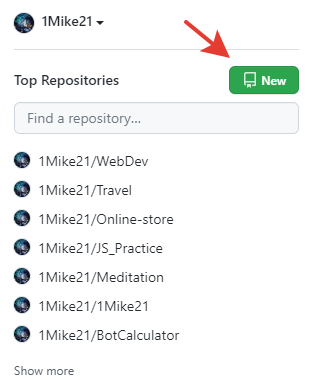

Что такое Git?
Система управления версиями (от англ. Version Control System, VCS или Revision Control System) — программное обеспечение для облегчения работы с изменяющейся информацией.
Система управления версиями позволяет хранить несколько версий одного и того же документа, при необходимости возвращаться к более ранним версиям, определять, кто и когда сделал то или иное изменение, и многое другое.
Одной из самых популярных систем контроль версий является Git
Скачать его можно с официального сайта
Начало работы с Git
Зарегистрируемся на сайте GitHub Далее мы можем создать свой репозиторий, нажав на + в правом верхнем углу.
Далее выставляем настройки, где указываем название репозитория и делаем его публичным (доступным всем пользователям в интернете) или же приватным (доступным только вам и тем, кому вы дадите доступ).

Теперь мы создали наш репозиторий и можем с ним работать
Основные команды Git и советы по работе с ним
- git init - инициализирован пустой репозиторий
- git status - текущее состояние локального гит репозитория
- git add . - добавить все файлы из папки
- git commit -m - сообщения в кавычках "", которые произошли
- git remote add origin и ссылка на репозиторий - подключение к репозиторию
- git push - залить проект в репозиторий
Во время разработки новой функциональности считается хорошей практикой работать с копией оригинального проекта, которую называют веткой. Ветви имеют свою собственную историю и изолированные друг от друга изменения до тех пор, пока вы не решаете слить изменения вместе.
Это происходит по набору причин:
- Уже рабочая, стабильная версия кода сохраняется.
- Различные новые функции могут разрабатываться параллельно разными программистами.
- Разработчики могут работать с собственными ветками без риска, что кодовая база поменяется из-за чужих изменений.
- В случае сомнений, различные реализации одной и той же идеи могут быть разработаны в разных ветках и затем сравниваться.
Работа с ветками
- Создание ветки:
Основная ветка в каждом репозитории называется master. Чтобы создать еще одну ветку, используем команду branch
namegit branch Session2Для просмотра существующих веток используют командуgit branch -
Переключение между ветками:
git checkout имя_ветки -
Объединение веток:
git merge имя_ветки -
Удаление ветки:
git branch -d имя_ветки